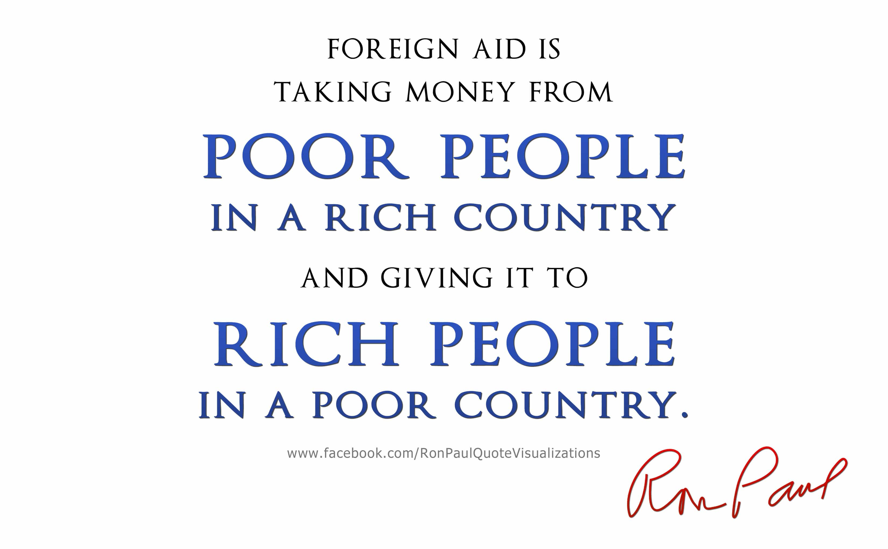

< < < Back
5 Important Insights From Red Pilled British Economist Peter Bauer – Return Of Kings
Overall, ROK leans towards an anti-socialist, anti-globalist, and anti-egalitarian position. One can add pro-Western, although there is no consensus regarding the extent to which traditional culture is preferred over modern or vice versa.
As I see it, it is crucial to disentangle the constructive components from the destructive, whether traditional or not, and that includes protectionism contra free trade. Furthermore, it is of chief importance to update things to current circumstances, while hold on to almost perpetual principles if some have proven worthy and withstood the test of time.
These positions do not come from nowhere, based on caprice and sentiment, but are based on facts, logic and historical realities. However, a significant share of academics appear to distort reality rather than to explain – or at least selectively only describe certain parts of it, while ignoring that which does not fit into their ideological framework – but some have accurately managed to describe how things are constituted and connected.
The British, Budapest-born economist Péter Tamás Bauer (1915-2002) is one such figure, who throughout his active years swallowed the red pill and decided to explain economic and material realities beyond philantrophic positivity, wishful thinking, as well as irrational fears of the future.
In his work Equality, the Third World, and Economic Delusion (1981), many of his core ideas related to egalitarianism, economic freedom and growth, foreign aid and trade policies are discussed in depth. While some are partly outdated, many are true even now and I have focused on those that still conform to the real world. However, I have completed a few areas which have been developed since Bauer’s work was written, linked to for instance developmental and personality psychology, as well as economics.
1. Egalitarianism is based on false assumptions
The reason why egalitarianism is a bad societal point of departure is that is based on false assumptions. The ability to create wealth is largely related to aptitude and work ethic. Bauer understood this and stressed that these are some of the main factors which underlie economic success, whether on the individual or group level.
People differ in economic aptitude as they do in artistic, intellectual, musical and athletic abilities. In particular they differ in their ability to perceive and utilize economic opportunities. Readiness to take advantage of economic opportunities is of great significance in explaining economic differences in open societies.
Distinguished psychologists such as Arthur Jensen, not the least in his book The G Factor (1998), have shown that economic success strongly correlates with IQ, but traits such as conscientiousness and Machiavellianism are indeed also crucial factors with regard to taking advantage of opportunities.
Donald Trump is one example of how such an industrious and cunning person has managed to be a successful entrepreneur. Or Ingvar Kamprad, the Swede who founded IKEA, for that matter.
But the fact that many left-leaning liberals and globalists have equated equality with equity is problematic, according to Bauer. After all, due to the above-mentioned differences equal opportunities will often create unequal outcomes, materially and economically, but is it really unfair that some people will earn much more than other?
Decades after the publication of Bauer’s book, a discursive focus within the left has shifted from opportunities in relationship to equity, towards the notion that people born in poor countries tend to lack opportunities and therefore inevitably will suffer from unequity.
That is indeed a real obstacle for any universalist, but becomes quite misguiding when the left looks at the issue. Chinese people were not happy under pure Communist rule, and it was only until Deng Xiaoping’s reforms in the late 1970s and forward that things have improved for them. Ironically leftist social engineering has never been particularly successful in dealing with inequalities or creating better societies, as Bauer shows. Failed states such as Venezuela and North Korea can only be, at least in part, healed by means of stable economic policies such as market economy, enabled by a fairly uncorrupt ruling class.
With that said, one can ask if it is fair that ultra-wealthy American entrepreneurs, regardless of their merits, earn as much as they do. But let’s say a Scandinavian social democratic model is not an option if one tries to cure this either, since it is essentially anti-entrepreneurial, creates dysgenic welfare problems, and can even lead to more economic inequalities due to a new imported lower class.
2. The big daddy government treats people like children
Another important aspect that Bauer discusses is that the managerial state, or whatever one prefers to call it, treats adults like children. Bauer finds a striking resemblance between post-taxation income and pocket money:
Old age, ill-health, the bringing-up of children and interruption of earnings, these are contingencies of life to be paid for out of one’s income, and for which adults can be expected to provide by saving or insurance. In many Western countries provision for these contingencies has come to be taken over largely by the state. Because the provision cannot be adjusted to the widely differing circumstances of individuals and families, it is apt to be both expensive and unsatisfactory. Such provision is necessarily financed by taxation. As a result many people’s post-tax income becomes like pocket money which is not required for major necessities and hazards of life because these are paid for by taxes largely levied on themselves. This redistribution of responsibilities implied in the operation of the welfare state means the reduction of the status of adults to that of children.
Since people differ in aptitudes they likewise do so regarding the ability to make proper decisions, but if the state “deprives” them of welfare they are forced to take responsibility and act like adults.
It is not always an easy balance and some will be treated unfair in ways that are not results of individual shortcomings, but if one also considers the fact that taxes are high whereas the actual quality of social security does not match the tax rate, then it is reasonable to significantly decrease the size of the welfare state.
3. The fear of population growth has historically been misguided
Bauer stresses, with examples both from the West and parts of Asia, that population growth has been a misguided fear. In fact, many nations have prospered in conjunction with population growth. The Malthusian trap of having too many mouths to feed and too many bodies to shelter, has been solved by improved agrarian and industrial techniques, communications and science. It is in fact sparsely populated nations that have suffered the most, predominantly due to poor communications and ineffective storage facilities.
With that said, living conditions for the largest share of people in places such as Nigeria, Bangladesh, Pakistan, Indonesia and Brazil are pretty bad and food shortages are or could be a real obstacle for them. Especially if one takes the nexus between wealth and IQ into account. If modern development is a part of the equation, these problems may escalate. Therefore family planning, somewhat akin to that of China, might be a good thing in some national contexts. If the state could create incentives for the small share of educated people to have more children, while simultaneously creating incentives for the lower classes to have fewer children, it could be beneficial for these countries in their entireties.
Additionally, Bauer does neglect the well-being of animals, such as that unimpeded extreme anthropocentrism have lead to the extinction of animal species in the aftermath of economic development. It is likely that this trend will continue until improved techniques eventually enable less environmentally damaging patterns of growth.
As for unemployment I think it is difficult to even make tentative suggestions about the future, but robots which partly or largely replace a human workforce are of course part of the equation.

4. Aid to the third world is largely based on false assumptions
Another significant topic which Bauer addresses is aid to the third world, and much like equality the notion is based on false assumptions. When wishful thinking economists and do good-ists make plans for the third world, it is based on extrapolating models which imply that as long as the rich nations give a certain share of their total GDP each year, then poor countries will prosper.
The problem is that extrapolations have to be based on reality, and each step fulfilled outside of the philanthropic matrix. Infrastructure has to actually be developed, bridges have to be built, violence has to be dealt with and so on, and that have far from happened in most Sub-Saharan African nations.
Instead many first-world nations have sponsored what the Ghanaian economist George Ayittey refers to as black neo-colonialism, i.e. cleptocratic African leaders who rather fill their own pockets than building their post-colonial nations. For instance, my home country, Sweden, has supported dictatorships such as Uganda.

5. The West has made the rest of the world prosperous rather than the opposite
One of the most absurd notions from the left, including academics, is that the Western world is rich at the expense of various developing countries. Things are not black or white and there is some empirical support for Immanuel Wallerstein’s world-systems theory, but Bauer, Michael Chisholm, Niall Ferguson, Charles Murray among others have shown that overall that is indeed not the case.

In fact, one just need to know of some basic contemporary East Asian history to realize that countries such as South Korea, Singapore and Taiwan are wealthy largely due to the West, the United States in particular, rather than the opposite.
While the work of Bauer may seem dated, he has given us many thought-provoking conclusions about how we can deal with our modern problems.
Read More: 3 Lessons From Political Economist Alberto Alesina